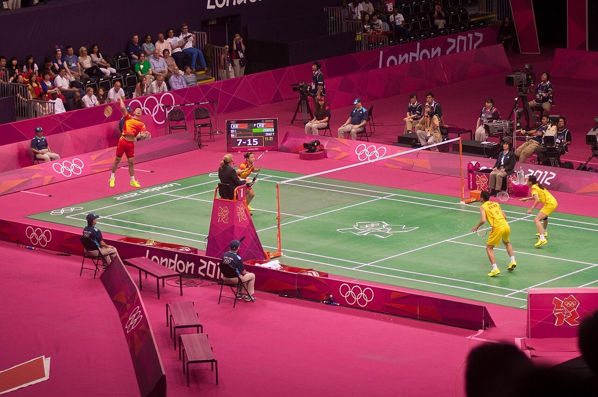

Lin Dan: How 'Super Dan' Won Every Major Title in Badminton
He lost in the first round of his first Olympics, then won gold in Beijing and London, five world titles and all nine of the sport's major titles.

From Fujian to the national team
Lin Dan was born on 14 October 1983 in Longyan, in China's Fujian province. He started playing badminton at the age of five. After he won the National Junior Championships at 12, he was picked for the People's Liberation Army sports team. He joined China's national team in 2000 and played for it for 20 years, NBC Sports and the South China Morning Post reported.
His breakthrough came at the 2004 All England Open. In the final he beat Denmark's Peter Gade 9-15, 15-5, 15-8 to win the title for the first time. After that final Gade called him "Super Dan", and the nickname stayed with him for the rest of his career.

The first Olympic setback
Lin went to the 2004 Olympic Games in Athens as the top seed in men's singles, but lost his first match to Ronald Susilo of Singapore. It was the first of his four Olympic Games.
Two Olympic titles
At the 2008 Games in Beijing, in front of a home crowd, Lin beat Malaysia's Lee Chong Wei 21-12, 21-8 in the final to win gold. At London 2012 the two met in the final again. Lin lost the first game 15-21, then won 21-10, 21-19. He became the first men's singles player to keep the Olympic title.

Lin won the world championship five times: in 2006, 2007, 2009, 2011 and 2013. He also won silver in 2005 and 2017. He won the All England Open six times, the last of them in 2016. By the age of 28 he had completed the Super Grand Slam, winning all nine major titles of his era, including the Olympic Games, the World Championships, the World Cup, the Thomas Cup, the Sudirman Cup, the Asian Games and the Asian Championships.
He also helped China win the Thomas Cup six times, between 2004 and 2018, and the Sudirman Cup five times, between 2005 and 2015.
The rivalry with Lee Chong Wei
Lin and Lee met in many finals over more than a decade, and the South China Morning Post described their rivalry as widely considered the greatest in the history of the sport. Lee won their meeting at Rio 2016, beating Lin 15-21, 21-11, 22-20 in the semi-finals. Lin then lost the bronze-medal match to Denmark's Viktor Axelsen and finished fourth.
His last title on the world tour came at the 2019 Malaysia Open, where he beat his compatriot Chen Long in the final.
Retirement and the Hall of Fame
Lin announced his retirement on 4 July 2020, at the age of 36, in a post on Weibo. He wrote that "pain and injuries no longer allow me to fight with my teammates," NBC Sports reported. The South China Morning Post reported that he also wanted to spend more time with his family. His ranking was outside the top 20, so a fifth Olympic Games was out of reach.
In May 2023 the Badminton World Federation elected Lin and Lee Chong Wei to its Hall of Fame. The two former rivals were inducted together at a ceremony at the Kuala Lumpur Convention Centre in Malaysia on 26 May 2023, the BWF said.